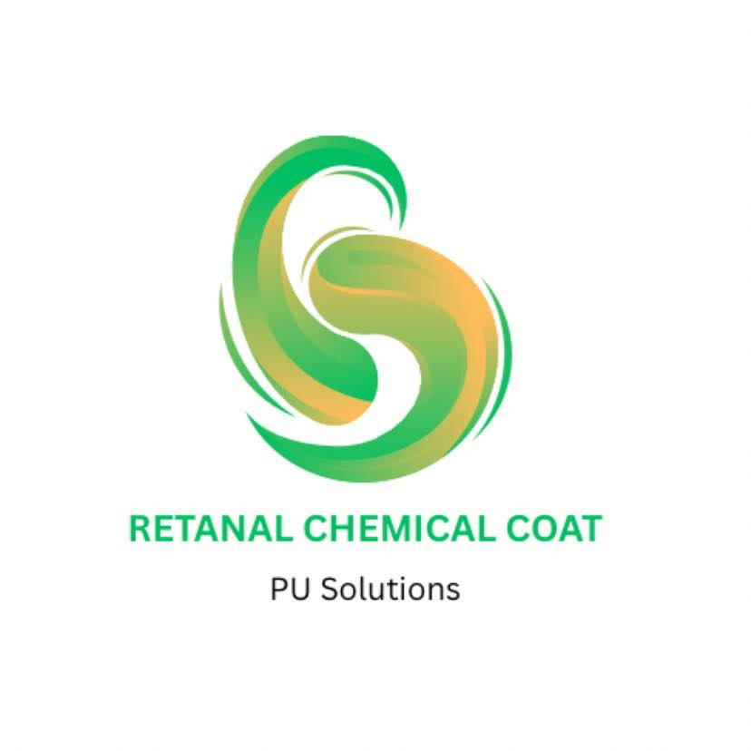

RCC PU SolutionsFounded with a commitment to quality and excellence, our company specializes in professional PU flooring solutions for residential and commercial spaces. What started as a small team with a passion for durable and high-performance flooring has grown into a trusted provider known for precision, reliability, and craftsmanship.
Through years of hands-on experience and continuous improvement, we have successfully delivered flooring projects that meet the highest standards. Our goal is to provide long-lasting flooring solutions that enhance both the strength and appearance of every space we work on.
To deliver high-quality PU flooring solutions through expert workmanship, reliable service, and durable materials—ensuring every project meets the highest standards of performance and customer satisfaction.
To become a trusted leader in PU flooring solutions, recognized for excellence, innovation, and long-lasting results in every space we transform.